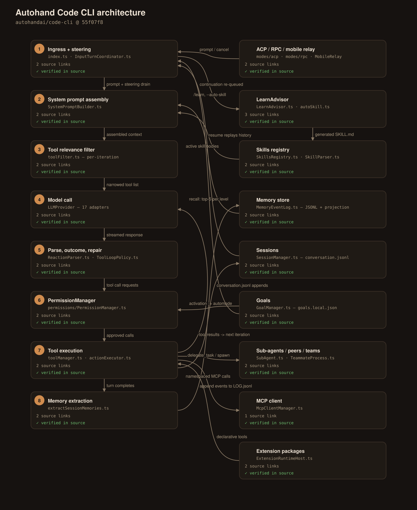
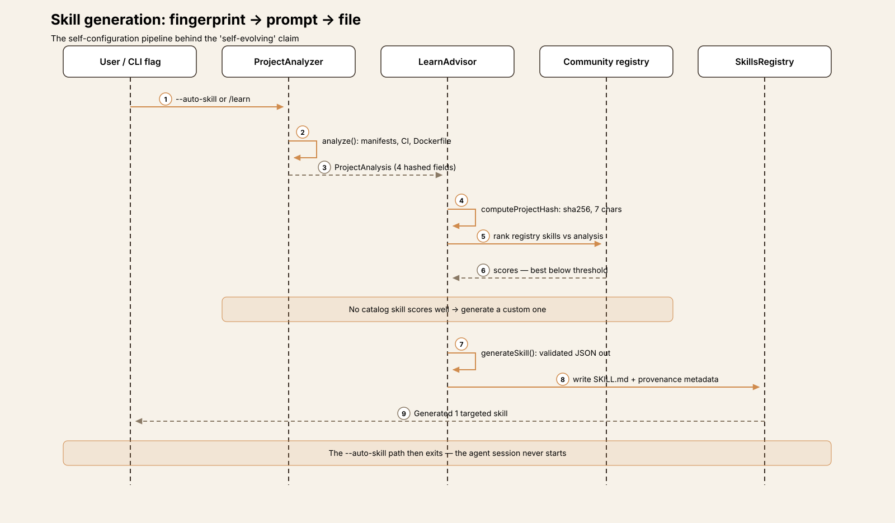
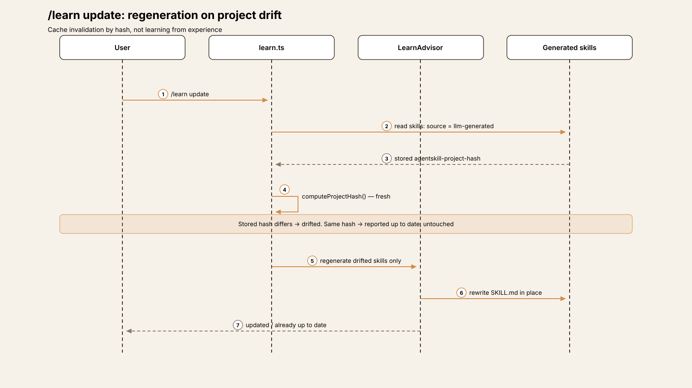
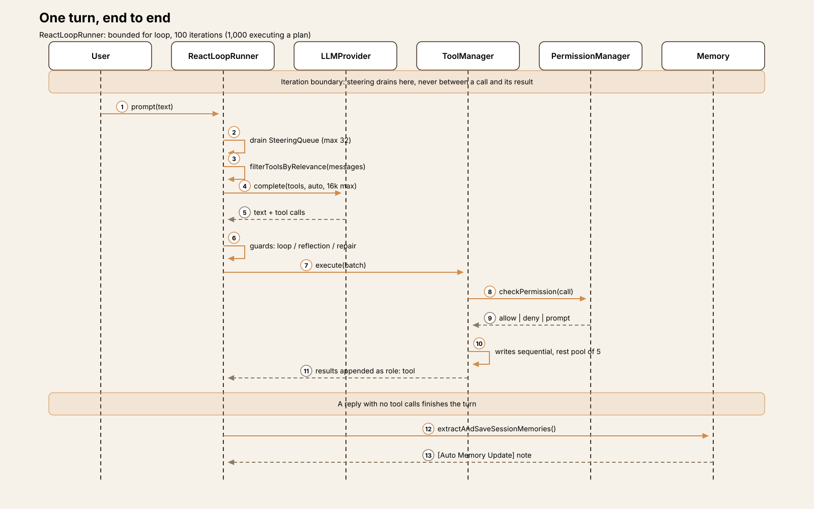
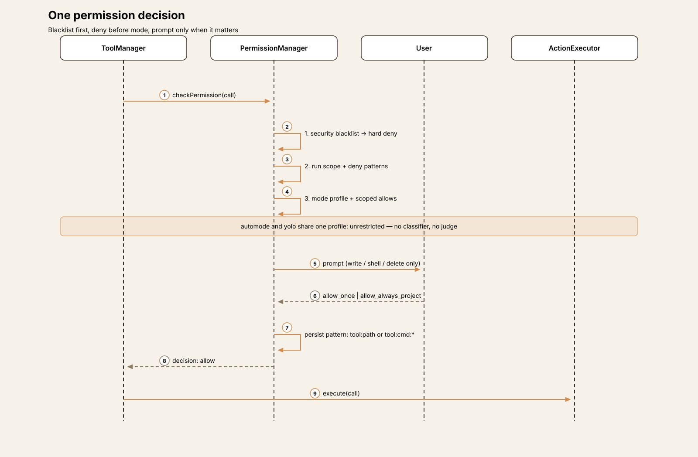
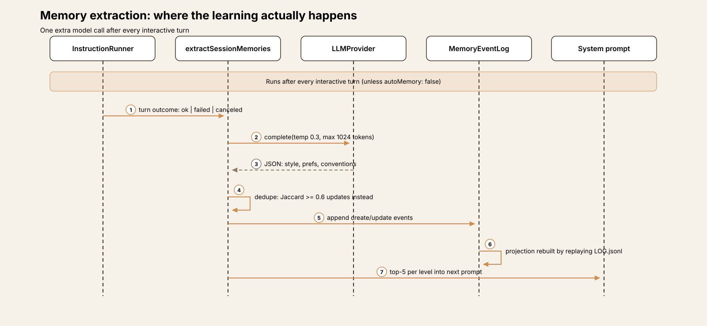

Agent Harness Anatomy #14: Autohand Code CLI — the harness that rewrites its own skills
Series: Agent Harness Anatomy — top-down dissections of real agent harnesses, grounded in verifiable source code. Every behavioral claim below carries a footnote to a pinned GitHub permalink; the full evidence lives in the endnotes.
Version block
- Repo: autohandai/code-cli
- Pinned: tag
v0.9.8→55f07f8112d3d53739c4c45d7c19d73772e645d7(2026-09-22) - Language: TypeScript on Bun (702
.ts/.tsxfiles, ~207k LOC insrc/; Ink + React TUI) - License: Apache-2.0
- Claim under test: "self evolving coding agent" — skills that generate and update themselves

Explore the interactive architecture diagram 17 nodes, 21 edges — pan, zoom, and follow every subsystem linkThe mental model
Autohand's headline claim is that it evolves: it generates its own skills. The mechanism is real, complete, and narrower than the word suggests — and pinning down exactly what it does is the most instructive way into this harness.
There is no learning from experience anywhere in the skill system. What exists is a three-step pipeline: fingerprint the project, prompt a model, write a file. A deterministic analyzer walks the workspace — package.json, requirements.txt, Cargo.toml, go.mod, CI configs, a Dockerfile — and reduces the project to four fields: languages, frameworks, patterns, package manager.1 Those four fields are hashed (a 7-character SHA-256 prefix).2 An LLM advisor then either ranks community-registry skills against that fingerprint or, when nothing scores well, generates a custom skill as validated JSON, which is written to disk as a SKILL.md with provenance metadata stamped into its frontmatter: source llm-generated, the project hash it was generated from, a timestamp.3 Later, /learn update recomputes the hash; if your project has drifted — you swapped a framework, adopted a test runner — the stale generated skills are regenerated in place. If the hash matches, nothing happens.4
So the "evolution" signal is project drift, not agent experience. Swap React for Vue and Autohand rewrites its own skills. Accumulate a year of sessions, corrections, and hard-won workflow habits, and the skill set changes not at all — no transcript, tool-call history, or outcome ever enters the generation prompt.5 Every trigger is explicit, too: a --auto-skill flag, a /learn command, an RPC method. Nothing generates or updates a skill at session end, and the agent itself has no tool that authors one.6
The harness does learn from experience — just in a different subsystem, writing a different artifact. After every interactive turn, a reflection call extracts preferences and conventions from the session into a persistent memory store (§Memory). Autohand's architecture thus splits "learning" in two: skills are generated from what your project is; memories are extracted from what you did. The marketing merges them. The code doesn't.
Everything else in this very large harness — 131 default tools, a four-scope permission engine, feature-flagged goals, OS-process teammates, a phone relay — is in service of a conventional, if maximalist, terminal coding agent. The sections below walk it axis by axis.
The self-evolution mechanism, end to end
Analysis. ProjectAnalyzer (src/skills/autoSkill.ts) is deliberately simple: dependency-name lookups against fixed framework tables, file-existence checks, a shallow directory walk. It cannot be wrong in interesting ways because it asserts so little — but that also bounds what a generated skill can know: the stack, never the codebase's content or the team's habits.1
Advisory. LearnAdvisor makes two kinds of LLM calls, both structured-JSON with hard validation and safe empty fallbacks. Phase 1 ranks the community registry against the analysis and audits installed skills as redundant, outdated, or conflicting. Phase 2 generates: the prompt is the analysis summary plus a gap analysis plus the three closest registry near-misses.7 The generated skill passes through the same door as every other skill — same parser, same frontmatter, same activation paths — distinguished only by its metadata block.8

Regeneration. The metadata is what makes /learn update possible: the stored hash is compared against a fresh one, and only drifted skills are rewritten.4 It is a cache-invalidation design, not a learning loop — closer to how a build system decides what to rebuild than to how an agent improves. That is not a criticism of the engineering, which is tidy. It is a correction to the noun: this is self-configuration, keyed to the project. The one genuinely experience-driven mechanism in the product is memory extraction, and it never touches skills.

One more calibration: the README's sample output for --auto-skill shows three skills being generated. That output comes from an older generator (generateAutoSkills, whose prompt demands exactly three skills from eight fixed categories) that has no callers left at this pin. The live path generates exactly one targeted skill — and then exits; the agent session never starts.9
Package map
Single-package TypeScript; the agent core is split across ~48 modules in src/core/agent/.
| Module | Role |
|---|---|
src/index.ts |
Commander entry (3,083 lines); mode dispatch: interactive / RPC / ACP / teammate |
src/core/agent/ReactLoopRunner.ts |
THE loop |
src/core/agent/ToolLoopPolicy.ts |
Loop guard, reflection guard |
src/core/toolManager.ts |
Tool registry + pre-flight (~3,400 lines); actionExecutor.ts implements |
src/core/toolFilter.ts |
Per-iteration tool relevance filtering |
src/skills/ |
Registry, parser, autoSkill.ts, LearnAdvisor.ts, community installer + scanner |
src/permissions/PermissionManager.ts |
Four-scope permission engine |
src/memory/ |
Event-sourced memory: log, projection, summary tree, extraction |
src/goals/ |
Goal store, queue, completion receipts |
src/modes/ |
ACP + RPC adapters, plan mode, pipe/command modes |
src/extensions/ |
Extension packages: manifest, registry, trusted runtime host |
The core loop
runAgentReactLoop is a plain bounded for loop — no event machinery — with a dependency-bag host assembled by AutohandAgent.10 The cap is 100 iterations by default, 1,000 while executing an accepted plan; exhaustion is soft (a summary call, then {status: 'incomplete'}).11 There is no "done" tool: the model finishes by answering without tool calls. Run budgets (requests, tokens, duration) exist but are opt-in — unset, they impose nothing; the iteration count is the only default bound.12
What fills the loop is repair machinery, the most distinctive mass in the codebase:
- Loop guard — an identical call signature six times, or an identical call and result three times, forces a final answer; two further violations abort the run.13
- Reflection guard — models on the text protocol must emit a
reflectionfield or a substantivethoughtbefore calling more tools; native-function-calling providers are exempt.13 - Deferred-action repair — a heuristic classifier catches replies that announce work without calling a tool ("I'll now edit…") and pushes back: a note, then one tool-free recovery turn, then abort.14
- Truncation recovery — length-cut responses are preserved and retried with a "be concise" note; three in a row aborts.15
Steering is disciplined: user messages typed mid-turn enter a bounded queue (32 messages) drained only at iteration boundaries — never between a tool call and its result, by explicit design comment. ESC aborts through an AbortController threaded into both the model call and tool execution.16 A session-level wrapper retries whole loop failures up to three times with a continuation message.
Delegation comes in three shapes that should not be conflated. Sub-agents run a separate, simplified copy of the loop (hard cap: 10 iterations, shared guards and budget, no MCP tools), nestable to depth 3. Peers are cross-session messaging — no loop at all. Teams are separate OS processes running the full CLI, coordinated over JSON-RPC on stdio, capped at five.17
One turn, end to end
- Drain the steering queue; run the peer boundary hook.
- Filter the tool list for this iteration (§Tools); if a plan is being drafted, intersect with the read-only set.
- Compact context if the tiers demand it (70% compress / 80% summarize / 90% crop).
- Call the model (native tools,
toolChoice: 'auto', 16k max output tokens); record usage against the budget. - Parse the response — native tool calls first, else the text protocol (§Tools). Classify the turn outcome; run the repair machinery if it misbehaves.
- Pre-flight each call (name repair, plan gate, permission check, hooks), then execute: writes and shell sequentially, the rest in a pool of five.
- Append results as tool messages; check mid-turn compaction; loop.
- On finish: flush any pending memory reflection (§Memory) — one extra model call that may write new memory entries and note them back into the conversation.

Play the 8-step trace One turn through Autohand — steering, prompt assembly, tool filtering, model call, parsing and repair, permissions, execution, memory extractionTools
The default registry holds 131 tool definitions — file/edit, some 45 git_* tools, browser, web, memory, delegation, teams, tasks, cron, MCP discovery — defined in a hand-rolled JSON-Schema subset and normalized to OpenAI function shape at send time.18 Goal tools (+11) appear only when the goal feature is enabled; plan tools exist only during the planning phase; a 20-tool browser set is swapped in, not added, for browser clients.
131 schemas never reach the model at once. A session-level filter drops policy-excluded tools, the permission layer removes ones the user has barred from advertising, and then, per iteration, a relevance filter keeps an "always" core (read, grep, search, todo, plan) plus categories triggered by keywords in recent messages and by tools already used.19 Tools with no category — which is to say, all MCP and agent-created tools — survive only if their name or a long description token literally appears in recent text. There is no deferred schema loading in the Anthropic sense; the tool_search tool is the discovery analogue, returning descriptions as a tool result.
Emission is dual-protocol. Providers reporting native tool calling get schemas; the rest get no schemas at all and must answer in a text protocol — [TOOL_CALL] blocks, <tool_call> XML, or a JSON payload of {thought, reflection, toolCalls, finalResponse} — parsed in that precedence order.20 Much of the loop's repair machinery exists to keep this second protocol honest.
MCP is supported over stdio/HTTP/SSE with namespaced tools (mcp__<server>__<tool>), re-registered wholesale whenever servers sync; per-property schema detail is flattened away in the mapping, and MCP tools are marked as never requiring approval.21 Separately, the agent can author its own tools at runtime: create_meta_tool takes a name, schema, and a shell handler (≤2,000 chars), screens the handler against a dangerous-pattern blocklist (curl|sh, rm /, reverse shells), dedupes by fingerprint and name similarity, and persists the result as a user- or project-scoped tool.22
There is no single cap on tool output returned to the model; results are appended verbatim. Caps are per-path — read_file stops at 2,000 lines or 128 KiB, meta-tool output at 200k characters.23
Approvals and modes
The permission engine merges four scopes at check time — session, project, user, extension policies — plus a per-run --allowed-tools/--disallowed-tools scope that is never persisted and cannot be widened by any allowlist.24 Each call is decided in a fixed order, and the first step matters most: an unbypassable security blacklist — .env*, .git/config, SSH keys, cloud credentials, sudo, rm -rf /, curl … | sh — is a hard deny in every mode, under every allowlist.25 Deny patterns and deny lists are likewise consulted before the mode is, so they still bite in YOLO. Only then do mode, scoped allows, and custom rules apply, with a fail-closed disposition: an unrecognized decision denies; the default decision prompts — though a prompt only actually appears for write/shell/delete-category tools or ones flagged requiresApproval, so a read-only tool with a default decision runs silently.26
Approvals are patterns, and they persist: allow_always_project writes an exact tool:command+args (or tool:path) pattern to the project's settings file; prefix approvals generalize to tool:<first-token>:*. One legacy path is more generous than the UI suggests — it adds a directory wildcard (tool:<dirname>/*) to path approvals automatically.27 Repo-supplied hooks and MCP servers, separately, don't run until the workspace is trusted for their exact content — a hash of the config; change the config, get re-prompted.28
The four interaction modes (Shift+Tab) are where names and machinery diverge:
- default — the baseline above.
- plan — writes are blocked in code, twice: the advertised tool list is intersected with a read-only set, and execution rejects anything outside it. Plans are markdown files; accepting one lifts the iteration cap to 1,000. (§Observations for the accept options that don't do what they say.)
- automode — the surprise: its permission profile is identical to YOLO's (
unrestricted). There is no per-call classifier or AI judge anywhere in this mode. What "auto" actually buys is continuation — with a goal active, the harness re-queues a "keep working" instruction after every successful turn.29 - yolo — the same unrestricted profile plus auto-yes; only the blacklist, run scope, and deny rules still stop a call, and they stop it as a deny, never a prompt.

The standalone --auto-mode is a different animal entirely: a Ralph-style outer loop (50 iterations / 120 minutes / $10 by default) in a git worktree with checkpoint commits and circuit breakers, completing when the output contains the string DONE.30
Memory: where the learning actually happens
Memory is two-level (user in ~/.autohand/memory/, project in <ws>/.autohand/memory/) and event-sourced: the canonical store is an append-only JSONL log of create|update|delete events; the per-entry JSON files readers see are a materialized projection, rebuilt by replaying the log, so deleted entries can't resurrect. Writes dedupe by token similarity (≥0.6 updates instead of creating).31
Extraction is the experience loop the skills headline promises. After every interactive turn, the harness fires one extra call on the session's own model: given the turn and its outcome (succeeded, failed, canceled — each with its own guidance), extract coding style, tool preferences, workflow habits, project conventions, in 1–2 sentences each, tagged user or project.32 It also runs on /clear, /new, and protocol-session close, and can be disabled (autoMemory: false); bare, ephemeral, and one-shot runs skip it. Saved items are announced back into the live conversation as an [Auto Memory Update] note.

Recall is lexical — no embeddings anywhere in the subsystem. The system prompt carries up to five entries per level; beyond that, a summary tree takes over, and its summaries are extractive ("12 memories: <first> … <last>"), not model-written. The recall_memory tool scores by phrase/token/tag matches plus recency decay.33 A separate aggregation turns skill/command usage events into a "learned project capabilities" ranking — statistics about what you use, surfaced as context, feeding nothing else.
Sessions are plain files: ~/.autohand/sessions/<id>/ holds metadata.json, conversation.jsonl, and state.json. Resume replays all stored messages into the model's conversation, fork truncates at the Nth user message, and a failed resume silently falls back to a fresh session.34
Goals
Goals are feature-flagged (slash_goal) and stored as one JSON file per workspace: one active goal per session, a shared FIFO queue, completed history, every write mirrored to a backup.35 A goal is an objective (≤80k chars) with up to 20 acceptance criteria and optional token/time budgets. Creating one does two things: queues a continuation instruction — "Active goal: … Continue working toward this persistent goal until it is complete, blocked, …" — and, quietly, switches the session into automode, i.e. the unrestricted permission profile, unless you've opted out.36 The continuation re-fires after every successful turn; budgets are accounted per turn and crossing one freezes the goal until raised.
Completion is the model's own call. update_goal(status: 'complete') is validated deterministically: wrap-up floors (minimum tokens/time) must be met, and if acceptance criteria exist, the model must supply exactly one evidence check per criterion, all passed, or the call throws. The stored receipt is stamped provenance: 'reported' — and the system prompt says the quiet part itself: "Receipts record reported evidence, not independent verification." With no criteria, no evidence is required at all: the model's assertion completes the goal.37 Templates for reusable goals live in a .pi-goals/ directory — a convention borrowed from the pi ecosystem.
Skills and extensions
A skill is a directory with a SKILL.md: frontmatter (name, description ≤1,024 chars, optional allowed-tools) plus a Markdown body.38 Thirteen ship built in. Discovery is aggressively cross-vendor — Autohand reads Codex, Claude, and generic agent skill directories at user level, and some forty third-party project directories (.goose/skills, .hermes/skills, .pi/skills, .qwen/skills, …), with its own .autohand/skills winning collisions.8 Activation is by $name mention (body appended to that turn's prompt), by the agent's skill tool, or by intent auto-injection (brainstorm in plan mode, systematic-debugging on failure signals); every request then carries active skills' full bodies in the system prompt.
Community skills install from a GitHub registry repo (with an Autohand API alongside for suggestions and backup/sync) through a regex security scanner: points deducted per suspicious pattern (curl|bash −20, .ssh/id_rsa −15), blocked below 30, warn-and-proceed below 50, interactive override allowed. The scanner runs only on registry installs — skills already on disk, from any vendor directory, load unscanned.39
Extensions are the heavier surface: manifest packages (autohand.extension.json, strict Zod) contributing declarative shell-template tools, agents, skills — and optionally a trusted runtime: JavaScript loaded in-process, unsandboxed, with the CLI's own OS access, gated by an install-time --trust flag, able to register commands, views, keybindings, CLI flags, hooks, providers, and permission policies (short of changing the permission mode itself).40
Interfaces
Ingress is broad. The Ink TUI is the primary surface; one-shot (-p) and pipe modes cover scripting, with an --output-schema option that forces a schema-valid JSON final answer.41 ACP is implemented in-process over ndJSON stdio — prompt/cancel/modes/models/session list-resume-fork, approvals proxied to the editor client — so Zed and JetBrains need no plugin from this project.42 The RPC mode is a JSON-RPC 2.0 stdio server of ~90 methods serving the (external) VS Code extension and the SDKs; notably, no SDK ships in this repo — the TypeScript/Go/Python/Java/Swift packages live elsewhere, on top of this protocol.43 A mobile relay pairs the desktop session to Autohand's cloud so a phone can steer turns, approve previews, and change models. Providers number 17 behind one interface (default: OpenRouter), from bespoke Anthropic/Bedrock/Vertex adapters to thin wrappers over a shared OpenAI-compatible client, plus local Ollama, llama.cpp, and MLX.44
Observations
The installer claims the agent command name — on other tools' turf. The Unix installer, the PowerShell installer, and the generated Homebrew formula all scan the user's PATH and, wherever a command named agent already exists in a writable directory, delete it and replace it with a link to Autohand (Windows deletes agent.com/.exe/.bat/.cmd, directories included, and substitutes a shim). Two qualifications keep the fact precise: nothing is planted where no agent exists, and only user-writable directories are touched. But there is no prompt, no confirmation, and no opt-out flag in the claiming code; the in-code comment is candid that the generic name is contested by other AI CLIs and should be "reclaimed". The npm postinstall and the local-build installer do not do this.45
A closed-source daemon rides along. Every release bundle includes ahtraces, a trace-monitoring binary whose source is a separate private repository (the local-build script calls it "Missing private ahtraces checkout"); CI fetches it at a pinned SHA and compiles it into the archives. The installer's checksum verification covers the bundle, not the binary individually. In its favor, the default state is genuinely inert: monitoring requires a stored consent record and an enabled flag, startup doesn't even spawn the process without them, and onboarding offers "Disabled (recommended default)" first. Consent tiers run from a local metadata index to cloud sync of "bounded, redacted message and tool parts". Two wrinkles: the quick --traces-on path selects the cloud-metadata tier — the local-only tier isn't offered there — and what the daemon watches, when enabled, is the session files of 19 harnesses, Autohand's competitors included.46
Docs-vs-code, three more. The docs describe --auto-skill as finding, installing, and activating community skills before the agent starts; the code generates one custom skill and exits (§The self-evolution mechanism).9 Plan mode's accept dialog offers auto_accept / clear_context_auto_accept, but the auto-accept flag is only ever logged — execution still prompts under baseline rules unless separately in yes/unrestricted mode.47 And "session" permissions, despite the name, persist to a project file and survive restarts.27
Declared constraints that aren't enforced. A skill's allowed-tools frontmatter is parsed, validated, and displayed — and never applied as a filter when the skill activates.38 A harness that sells provenance for its generated skills might be expected to honor the tool restrictions those skills declare.
Tradeoffs
Read generously, Autohand's thesis is that a harness should persist things: skills as files, memories as an event log, goals as JSON, plans as markdown — all inspectable, all diff-able, all portable across the many surfaces (TUI, ACP, RPC, mobile) that read them. The self-configuration pipeline is the cleanest expression of it: a fingerprint, a prompt, an artifact with provenance, and invalidation by hash. Read strictly, the same instinct produces the sprawl: 131 tools narrowed by keyword heuristics, four permission scopes plus a run scope plus extension policies, three delegation mechanisms, two auto-modes with different meanings, and a repair apparatus in the loop whose size is itself a finding — much of it exists to keep a dual emission protocol (native calls and a text fallback) from misbehaving, a tax providers with universal native calling wouldn't impose.
The sharpest single design decision is the automode/yolo identity: two mode names, one unrestricted profile, differentiated only by a goal-continuation behavior that itself escalates privileges on goal creation. In a harness whose blacklist and deny-ordering are genuinely careful, the mode labels are the least careful part.
Comparison matrix row
| # | Dimension | Autohand Code CLI (v0.9.8) |
|---|---|---|
| 1 | Agent loop | Bounded for loop, 100 iterations (1,000 executing a plan); model-declared finish; loop/reflection/deferred-action/truncation repair machinery; steering at iteration boundaries only |
| 2 | Tool system | 131 defaults in a hand-rolled schema subset; per-iteration keyword-relevance filtering; MCP (namespaced, flattened schemas); agent-authored meta-tools with handler blocklist |
| 3 | Model providers | 17 behind one LLMProvider interface; OpenRouter default; capability flag switches native vs text emission protocol |
| 4 | Prompt construction | System prompt rebuilt per request incl. memory block, skill catalog + active skill bodies, learned-capabilities summary; context tiers 70/80/90% compress/summarize/crop |
| 5 | Memory/session | Event-sourced JSONL memory (user+project), LLM extraction after every interactive turn, lexical recall, extractive summary tree; sessions as JSONL dirs with full replay resume |
| 6 | Reasoning/planning | Plan mode with code-enforced read-only set; goals with continuation loop and self-attested completion; sub-agent loop copy (cap 10, depth 3); OS-process teams (≤5) |
| 7 | Extensibility | Cross-vendor skills (SKILL.md) incl. LLM-generated; community registry + regex scanner (install-path only); extension packages with in-process trusted runtimes; hooks at fixed events |
| 8 | Interfaces | Ink TUI; one-shot/pipe CLI with JSON-schema output; ACP (in-process, ndJSON); JSON-RPC stdio for VS Code/external SDKs; cloud mobile relay |
| 9 | Failure handling | Provider retries; session-level retry ≤3 with continuation; context-overflow crop-and-continue; per-tool failure guard (2 strikes); soft iteration-limit summary |
| 10 | Security model | Unbypassable security blacklist first; layered pattern scopes; fail-closed disposition; workspace trust by config hash; no sandbox (trusted extension runtimes run in-process) |
Endnotes
All notes are VERIFIED against v0.9.8 (55f07f8112d3d53739c4c45d7c19d73772e645d7) unless marked otherwise. GH = https://github.com/autohandai/code-cli/blob/55f07f8112d3d53739c4c45d7c19d73772e645d7/.
-
ProjectAnalyzerat GH…/src/skills/autoSkill.ts#L160;analyze()at L169:package.jsondependency tables (JS_FRAMEWORKS/PYTHON_FRAMEWORKS, L120-L150),requirements.txt,pyproject.toml,Cargo.toml,go.mod,.github/workflows,Dockerfile,**/migrations/**. No file contents beyond manifests are read. ↩ -
computeProjectHashat GH…/src/skills/communityInstaller.ts#L254: sha256 ofJSON.stringify({languages, frameworks, patterns, packageManager})(each sorted),.slice(0, 7); comment at L250-L253 states dependencies are excluded on purpose. ↩ -
runAutoSkillGenerationat GH…/src/skills/autoSkill.ts#L599-L686: skills dir<workspace>/.autohand/skills(L646;PROJECT_DIR_NAME = '.autohand',src/constants.ts:167), SKILL.md written at L665. Metadata injection:injectGeneratedMetadataat GH…/src/skills/communityInstaller.ts#L268 stampsagentskill-slug,agentskill-source: llm-generated,agentskill-generated-at,agentskill-project-hash. ↩ -
handleLearnUpdateat GH…/src/commands/learn.ts#L309: filtersmetadata['agentskill-source'] === 'llm-generated', compares storedagentskill-project-hashto a freshcomputeProjectHash, regenerates only mismatches, rewrites at the skill's existing path. ↩ -
Generation prompt inputs:
buildLearnGenerationUserPromptat GH…/src/skills/learnPrompts.ts#L195 =buildSkillGenerationPrompt(analysis)(autoSkill.ts:468: project name, platform, languages, frameworks, patterns, package manager, hasGit/hasTests/hasCI, top-30 dependencies, tool catalog) + gap analysis + top-3 low-scoring registry skills. Negative finding: no session, transcript, or history type appears inLearnAdvisor's inputs (src/skills/LearnAdvisor.tsconstructor takes only anLLMProvider). ↩ -
Trigger inventory:
--auto-skillflag at GH…/src/index.ts#L405, handler L1937-L1955 (callsrunAutoSkillGeneration, thenreturn);--learn/--learn-updateat L406, L568-L580, L2404+;/learninsrc/commands/learn.ts; RPC insrc/modes/rpc/adapter.ts:2511-2597. Negative findings: grep forLearnAdvisoroversrc/returns onlycommands/learn.ts,commands/skills.ts(client variant), and the RPC adapter — nothing in the loop or session lifecycle; the model-facing skill tools areskill(toolManager.ts:1427),find_agent_skills(:1614),install_agent_skill(:1627) — none authors content. ↩ -
LearnAdvisor.analyzeat GH…/src/skills/LearnAdvisor.ts#L67 (audit statuses restricted toredundant|outdated|conflicting, L45);generateSkillat L142 (JSON validated field-by-field, name normalized bytoKebabCase, L32-L42). Both return safe fallbacks on any error. ↩ -
Skill format/precedence: frontmatter type GH…/src/skills/types.ts#L31-L44, constraints L104-L148; parser
src/skills/SkillParser.ts:48-95; source union (11 values, "later sources win") types.ts:14-26; locations insrc/constants.ts(getUserSkillLocations/getProjectSkillLocations, incl.THIRD_PARTY_PROJECT_SKILL_DIRS); 13 builtins undersrc/skills/builtin/*/SKILL.md(counted at the pin). Generated skills register as sourceautohand-projectvia the same discovery. ↩ -
generateAutoSkillsat GH…/src/skills/autoSkill.ts#L556 (system prompt at L515 demands "exactly 3 skills"). Negative finding: grep forgenerateAutoSkillsoversrc/outsideautoSkill.tsreturns zero callers. README sample output (README.md §"Auto-Skill Generation", L295-L307) shows 3 skills; the live path prints "Generated 1 targeted skill" (autoSkill.ts:683 area).docs/agent-skills.md§"Auto-Skill Bootstrap" describes install-and-activate behavior not present in the--auto-skillhandler (index.ts:1937-1955). DOCS vs VERIFIED code. ↩ -
runAgentReactLoopat GH…/src/core/agent/ReactLoopRunner.ts#L472, loopfor (let iteration = 0; …)at L634; host assembly insrc/core/agent.ts:1304-1325. ↩ -
Cap at ReactLoopRunner.ts:488-491 (
isExecutingPlan ? 1000 : config.agent?.maxIterations ?? 100); exhaustion path ~L1569-L1582 (summary call,reason: 'iteration_limit'). Finish:TurnOutcome.type === 'finish',src/core/agent/TurnOutcomeEvaluator.ts:132-136. ↩ -
RunBudget.fromSettingsreturnsundefinedwhen no limit is set, GH…/src/core/agent/RunBudget.ts#L322-L335; checked pre-flight at ReactLoopRunner.ts:763-764. ↩ -
ToolLoopGuard(identical signature limit 6, call+result limit 3, post-force violations 2) at GH…/src/core/agent/ToolLoopPolicy.ts#L79-L93;ToolReflectionGuardat L173 (reflection-field / >50-char thought rule L216-L228; skipped whensupportsNativeToolCalling). ↩ -
DEFAULT_RESPONSE_COMPLETION_HOOKSand theinvalid_deferred_actionclassification at GH…/src/core/agent/ResponseCompletionClassifier.ts#L351-L356;MAX_TOOL_FREE_RECOVERIES = 2at ReactLoopRunner.ts:77. ↩ -
TruncationRecoveryTracker,MAX_CONSECUTIVE_TRUNCATION_REPAIRS = 3at GH…/src/core/agent/TruncationRecovery.ts#L426-L438. ↩ -
SteeringQueuebounds (MAX_STEERING_MESSAGES = 32,MAX_STEERING_MESSAGE_LENGTH = 8_000) at GH…/src/core/agent/SteeringQueue.ts#L388-L389; drain-at-boundary comment and code at ReactLoopRunner.ts:617-640; abort wiring insrc/core/agent/InputTurnCoordinator.ts:70,314. ↩ -
Sub-agents:
SubAgent.runTask(own loop,maxIterations = 10) at GH…/src/core/agents/SubAgent.ts#L365-L391;DEFAULT_MAX_DEPTH = 3,src/core/agents/AgentDelegator.ts:22; no MCP tools for sub-agents (SubAgent.ts ~L183). Peers:src/core/agent/AgentPeerRuntime.ts:22(messaging only; tools filtered unlessconfig.sessions.communication.enabled, AgentDependencyComposer.ts:400-401). Teams:spawn()of the CLI binary with JSON-RPC over stdio,src/core/teams/TeammateProcess.ts:134-149; capmaxTeammates ?? 5,src/core/teams/TeamManager.ts:104. ↩ -
ToolDefinition/ToolParameterat GH…/src/core/toolManager.ts#L76-L127;DEFAULT_TOOL_DEFINITIONSat L425 — 127 literalname:entries counted at the pin, +4 via...PEER_TOOL_DEFINITIONS= 131;GOAL_TOOL_DEFINITIONS(11) at L303; browser set (20) at L2164;toFunctionDefinitionat L2614. ↩ -
filterToolsByRelevance/detectRelevantCategoriesat GH…/src/core/toolFilter.ts#L733-L800 (alwayscategory L432-L450; uncategorized tools survive only viamatchesToolByText, L714-L728); invoked per iteration at ReactLoopRunner.ts:646. Permission advertising filter:src/permissions/toolAdvertising.ts:15-30. ↩ -
ReactionParser.parseAssistantResponseprecedence at GH…/src/core/agent/ReactionParser.ts#L60-L118; capability gate and "no schemas are sent" behavior at ReactLoopRunner.ts:527-531. ↩ -
McpClientManagernamespacing at GH…/src/mcp/McpClientManager.ts#L759-L760; sync into the registry (flattened properties,requiresApproval: false) insrc/core/agent.ts:600-622andtoolManager.ts:2545-2552. ↩ -
create_meta_toolat toolManager.ts:1258 →MetaToolService.createMetaTool, GH…/src/core/metaTools/MetaToolService.ts#L69; handler blocklist atsrc/core/metaTools/safety.ts:225-253; similarity threshold 0.75; persistence viasrc/core/toolsRegistry.ts:76. ↩ -
Verbatim append of tool results at ReactLoopRunner.ts ~L1334;
read_filecaps (READ_FILE_MAX_LINES = 2_000,READ_FILE_MAX_BYTES = 128*1024) atsrc/core/actionExecutor.ts:250-252; meta-tool output cap 200,000 chars at actionExecutor.ts:4237-4243. ↩ -
Scope merge at GH…/src/permissions/PermissionManager.ts#L182-L310; run scope never persisted / cannot be widened:
src/permissions/runToolScope.ts:1-56. ↩ -
DEFAULT_SECURITY_BLACKLISTat PermissionManager.ts:38-180, checked first at L318-L322 and again at L700-L701. ↩ -
Disposition collapse (
default→ prompt, unknown → deny) at GH…/src/permissions/types.ts#L92-L124;shouldPromptForToolPermissionat toolManager.ts:66-75. ↩ -
applyPromptDecisionat PermissionManager.ts:487+; exact patterns viacontextToPatternat L574+; legacyrecordDecisiondirectory-wildcard behavior at L430+. Storage files:.autohand/session-permissions.json(session scope — persists across runs),.autohand/settings.local.json(project), globalconfig.json(user). ↩ -
src/permissions/workspaceTrust.ts:1-113: SHA-256 over canonical JSON of{hooks, mcpServers}; store~/.autohand/trusted-workspaces.json. ↩ -
Mode sequence and profile mapping at GH…/src/core/agent/InteractionModeController.ts#L7-L12 and L56-L88 (yolo and automode →
unrestricted); continuation viaPostTurnActionCoordinator.resolveActiveGoalContinuation. Plan-mode gates: ReactLoopRunner.ts ~L654-L665 (advertising) and toolManager.ts:2693-2700 (execution); read-only setsrc/modes/planMode/PlanModeManager.ts:16-48. ↩ -
AutomodeManagerdefaults at GH…/src/core/AutomodeManager.ts#L34-L46 (maxIterations: 50,maxRuntime: 120min,maxCost: $10,completionPromise: 'DONE',useWorktree: true); agent built withyes: trueonly. ↩ -
Event log format and ops at GH…/src/memory/MemoryEventLog.ts#L21-L24; projection rebuild in
src/memory/MemoryProjection.ts:24-67; dedup thresholdSIMILARITY_THRESHOLD = 0.6atsrc/memory/MemoryManager.ts:28, applied L93-L120; ID derivation L546-L548. ↩ -
EXTRACTION_PROMPTat GH…/src/memory/extractSessionMemories.ts#L63-L79;extractAndSaveSessionMemoriesat L155 (session's own provider,temperature: 0.3, maxTokens: 1024). Per-turn trigger:src/core/agent/InstructionRunner.ts:811-823→src/core/agent.ts:871(shouldRunTurnMemoryReflectiongates onconfig.agent.autoMemory !== false, skips bare/ephemeral/command mode)./clear|/newtrigger:src/commands/clear.ts:40-57. ↩ -
getContextMemoriesat MemoryManager.ts:392+, injected bysrc/core/agent/SystemPromptBuilder.ts:155,426under## User Preferences & Memory; summary-tree format atsrc/memory/MemorySummaryTree.ts:83-88(extractive, ≤320 chars);recall()lexical scoring at MemoryManager.ts ~L470-L540. Negative finding: grep forembedding|vectoroversrc/memory/returns no recall-path hits. ↩ -
Session layout and append at GH…/src/session/SessionManager.ts#L104-L180; resume in
src/startup/resumeCommand.ts:20-61andsrc/core/agent/AgentLifecycleRunner.ts:1342+(full replay; failure → fresh session fallback ~L1423). ↩ -
Goal store path
<ws>/.autohand/goals.local.jsonat GH…/src/goals/GoalManager.ts#L31 (also L837-L838); snapshot/backup insrc/goals/GoalSnapshotStore.ts:41-60; feature flagsrc/goals/feature.ts:9-25; data modelsrc/goals/types.ts:44-62. ↩ -
Continuation instruction text at GoalManager.ts:55-62; activation side effect at GH…/src/core/agent/GoalActivation.ts#L14-L17 (
activateGoalAutoMode→ modeautomodeunless non-interactive ordualAutoMode === false); per-turn usage recording at InstructionRunner.ts:779. ↩ -
Completion validation at GoalManager.ts:405-435 and GH…/src/goals/GoalCompletion.ts#L38-L52 (
floorMetfloors; per-criterion evidence checks; receiptprovenance: 'reported'); the disclaimer is in the system prompt itself,src/core/agent/SystemPromptBuilder.ts:119. ↩ -
Frontmatter/constraints as 8.
allowed-toolsnon-enforcement: negative finding — grep for consumers of the parsed'allowed-tools'field oversrc/returns only display (src/core/agent/AgentCommandRuntime.ts:754), backup, and metadata paths; no activation-time filter exists. ↩ -
Registry defaults (
autohandai/community-skills, rawregistry.json, 24 h cache) at GH…/src/skills/GitHubRegistryFetcher.ts#L20-L48; install pipelineinstallSkillWithSecurityatsrc/skills/communityInstaller.ts:62-190; scanner scoring at GH…/src/skills/SkillSecurityScanner.ts#L36-L116 (safe ≥ 50,blocked < 30). Negative finding:SkillSecurityScanneris instantiated only at communityInstaller.ts:119 — the local discovery/load path never scans. ↩ -
Manifest rules at GH…/src/extensions/manifest.ts#L12-L15 and L160-L245; strict schema at
src/extensions/schema.ts:45-62; runtime API surface atsrc/extensions/ExtensionRuntimeHost.ts:120-165(dynamicimport(), in-process, trust-gated; validation never imports runtime code). ↩ -
Root signature and flags at GH…/src/index.ts#L378-L467; output schema enforcement in
src/modes/outputSchema.ts; pipe composition insrc/modes/pipeMode.ts/src/index.ts:1962-2012. ↩ -
ACP entry (
ndJsonStream+AgentSideConnectionfrom@agentclientprotocol/sdk) at GH…/src/modes/acp/index.ts#L36-L100; adapter methods insrc/modes/acp/adapter.ts(initialize:607,prompt:696,cancel:932, session list/resume/fork/load :1042-1236); client-proxied approvals insrc/modes/acp/permissions.ts:29,79. ↩ -
RPC header and entry at GH…/src/modes/rpc/index.ts#L1-L6 (
runRpcMode:478); method tablesrc/modes/rpc/types.ts:202-294. SDK absence:package.jsonfileslists onlydist, assets, schema, extension examples/docs; the repo's own gap analysis concedes no public typed client library ships from this repo (docs/CODEX_FEATURE_GAPS.md:171-173, DOCS). ↩ -
Provider contract at GH…/src/providers/LLMProvider.ts#L20-L53; factory (default
openrouter,UnconfiguredProviderfallback) atsrc/providers/ProviderFactory.ts:75-290; built-in name union (17) atsrc/types.ts:40. ↩ -
Unix claiming:
claim_agent_alias_path_wide()at GH…/install.sh#L430-L470 (rationale comment L431-L436; unconditional call L257;rm -fat L465; writable/existing-entry guards L455-L463). Windows:Claim-PathWideAgentAliasatinstall.ps1:523-569, collision names (agent.com/.exe/.bat/.cmd) L728. Homebrew: checked-inhomebrew/autohand.rbis a legacy stub without the behavior; the generated production formula has it inpost_install,.github/render-homebrew-formula.mjs:69-90, asserted bytests/homebrew.spec.ts:115-119. Negative findings:package.jsonpostinstall(L41) andinstall-local.shcontain no PATH scan and no foreign-agenthandling. ↩ -
Private-source evidence:
install-local.sh:72-84("Missing private ahtraces checkout"); pinned SHA file.github/ahtraces-ref(ee9ca7ce5a7445672d4f955e6cc85e889b126f50); CI checkout/compile/ bundle at.github/workflows/release.yml:244-302,460-483. Consent gate (consentVersion === 1 && enabled === true) at GH…/src/integrations/ahtraces/consent.ts#L4-L18; no-spawn short-circuit and settings handoff (authToken only whencloudSync) atsrc/integrations/ahtraces/client.ts:175-250; onboarding default atsrc/integrations/ahtraces/consentPrompt.ts:12-30("Disabled (recommended default)"); cloud-tier descriptions at L21-L30 are the vendor's own strings for closed-binary behavior (DOCS).--traces-on→cloud-metadatamapping atsrc/integrations/ahtraces/preferences.ts:11. Watched harnesses (19) atsrc/integrations/ahtraces/workMap.ts:8-11; aggregate-only Work Map schema at L126-L133. ↩ -
Accept modal options at
src/modes/planMode/PlanModeManager.ts:217-261; the flag's only consumer is a log statement atsrc/core/agent/AgentCommandRuntime.ts:586-588. Negative finding: grep forautoAcceptEditsoversrc/returns no PermissionManager wiring. ↩